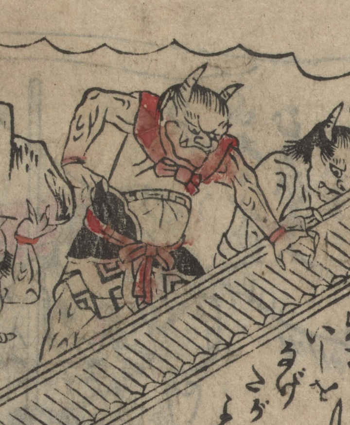

鬼；オニ，大江山；オオエヤマ

頭に2本の角が生えた鬼。首に布をつけ、腰に甲をあて、胸帯や腰紐を結んでいる。城内から石を投げて反撃している。
著作者：不明／出典：親書誌：U426_nichibunken_0473：[絵本千丈嶽]；エホンセンジョウガタケ／日付：2025／資源識別子：U426_nichibunken_0473_0004_0001
Copyright (c)2010- International Research Center for Japanese Studies, Kyoto, Japan. All rights reserved.